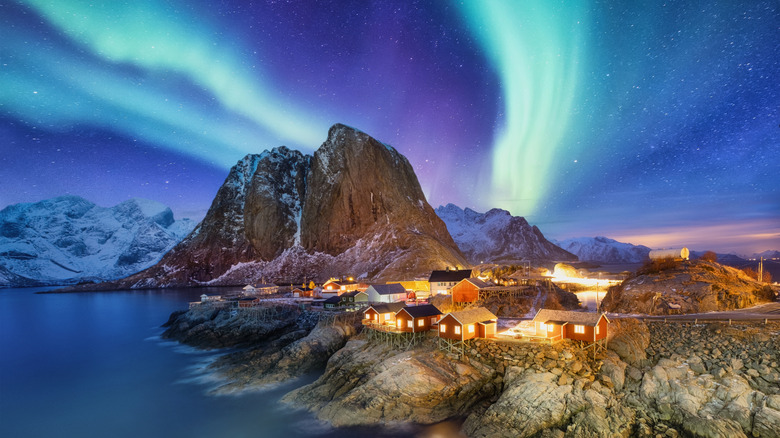

Perched on the edge of the Arctic Circle, Hamnøy is a place where time seems to stand still against a backdrop of raw, elemental beauty. My journey here was defined by an overwhelming sense of isolation and awe; standing on the bridge at midnight while the earth's most spectacular light show played out above the frozen sea is an experience that permanently changed how I view the natural world.
The village is dominated by the monolithic peak of Festinden, a jagged wall of stone that drops dramatically straight into the dark waters of the Vestfjorden. Beneath its shadow lies a tiny cluster of historic red cabins, braving the fierce Arctic winds.

Staying in a restored rorbu (a traditional fisherman’s cabin built on stilts over the water) offered a direct connection to Lofoten's seafaring heritage. Inside, the faint, comforting scent of aged pine and saltwater filled the air.
My most cherished memory was stepping out onto the wooden deck at 2:00 AM in sub-zero temperatures. The silence was absolute, broken only by the gentle lapping of the tide. Suddenly, ribbons of emerald and violet light erupted across the starlit sky, reflecting perfectly off the glassy water. It was a humbling moment that made the biting cold completely vanish.
To truly grasp the cinematic scale of the archipelago, explore this stunning aerial footage of the surrounding fjords and islands.